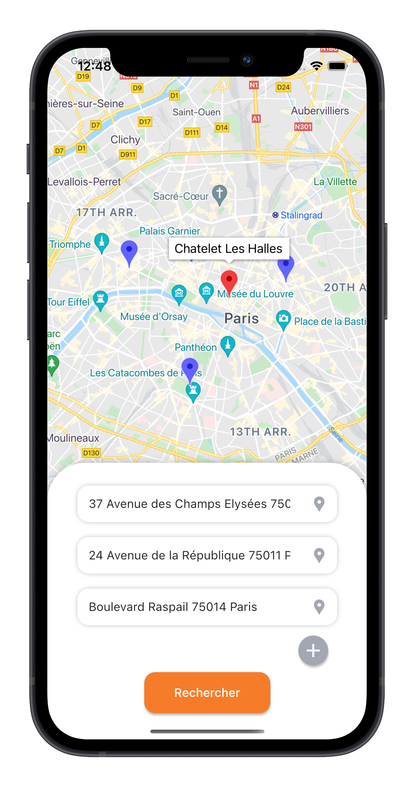

Entre les adresses des différents points de départ et laisse Rakkoon te dire quelle est la station optimale pour tous

Rakkoon analyse les temps de trajet à pieds et transport en commun (Métro,
RER, Tram, Transilien...), puis à partir de points de départ,
calcule une destination optimisée, en quelque
sorte la station au juste milieu en temps de
transport !